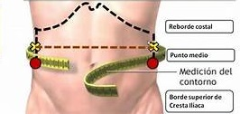

Calculá tu Cintura
La medida de la cintura puede establecer si tenemos o no un riesgo aumentado de padecer enfermedades metabólicas, como diabetes tipo 2, colesterol y triglicéridos altos, y obesidad, entre otras.
- Pararse con los pies juntos y la columna recta.
- Usar siempre el mismo centímetro para hacer la medición. El centímetro va en el punto medio entre el final de la última costilla y el borde superior del hueso de la cadera, pasando por el ombligo (el centimetro tiene que estar derecho, paralelo al piso)
- La medición se hace luego de una expiración normal (respiramos y luego de largar el aire medimos) y el centímetro debe ajustar pero no demasiado. Tener en cuenta que en todas las mediciones que haga siempre debo ajustar con la misma presión, para que el resultado no sea engañoso.

| Mujeres | Varones | |
|---|---|---|
| Riesgo elevado | mayor a 80cm | mayor a 94cm |
| Riesgo muy elevado | mayor a 88cm | mayor a 102cm |